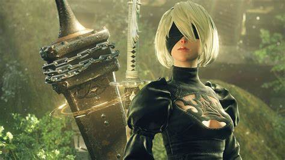
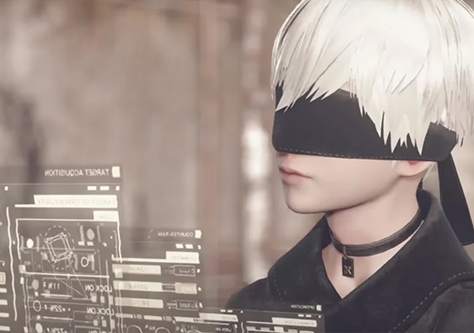

Una historia que te hara pensar
El videojuego comparte el mismo universo que Nier, una serie derivada de la saga Drakengard. La historia sigue las batallas del androide de combate 2B, su compañero 9S, y el obsoleto prototipo A2, en una guerra de poder entre las máquinas creadas por invasores de otro mundo y los restos de la humanidad. La producción comenzó en 2014 con su creador Yoko Taro, el productor Yōsuke Saitō y el compositor Keiichi Okabe. El equipo también contó con Atsushi Inaba como coproductor y Akihiko Yoshida, artista regular de Square Enix, como diseñador de personajes. El objetivo principal era crear un videojuego fiel al espíritu del original con una mejor jugabilidad de acción. Siendo un proyecto completamente nuevo para sus desarrolladores, el personal de PlatinumGames se enfrentó a múltiples desafíos al desarrollar el videojuego y un entorno de mundo abierto.
Nier: Automata comparte el mismo universo postapocalíptico que el primer Nier y toma lugar luego del cuarto final de este último videojuego. Aunque contiene referencias con la serie Drakengard en cuanto a su atmósfera oscura y la ramificación de su historia, no guarda conexión narrativa con dicha saga. Situada miles de años luego de los eventos que ocurrieron en Nier, la historia gira en torno a una guerra entre los androides remanentes de la humanidad y un ejército de máquinas invasoras de otro mundo. La irrupción inicial de éstas obligó a la población de la Tierra a huir hacia la Luna. Con el fin de volver a recuperar el planeta, la humanidad creó el escuadrón «YoRHa», una unidad integrada por androides de combate con el fin de luchar en una guerra subsidiaria. Aunque a éstos les niegan las emociones y carecen de nombres reales, tienen actitudes particulares por las que se les puede distinguir. A los androides se les comanda desde el "Búnker", la sede de la escuadrilla de infantería automatizada YoRHa, que está en órbita sobre el planeta y establece una resistencia auto-suficiente en la Tierra para hacer retroceder a las máquinas.
La historia completa de NieR: Automata se compone de 5 finales diferentes que son necesarios para integrar un único relato.
NieR: Automata abre con los personajes 2B y 9S (androides femenino y masculino respectivamente) generando el camino para una futura incursión en el territorio de las máquinas, trabajando por órdenes de la Comandante en eliminar las amenazas para la Resistencia local. Con la ayuda de la líder Anémona, las gemelas Devola y Popola y más tarde Pascal, así como otros androides, 2B y 9S derrotan múltiples amenazas que surgen del bando de las máquinas. Durante sus misiones, presencian el nacimiento Adán y Eva para luego luchar contra ellos. Ambos son manifestaciones físicas de la red de las máquinas que les revelan que sus creadores (extraterrestres ya extintos) fueron destruidos por una rebelión de las mismas máquinas hace ya siglos. 2B y 9S también se encuentran con la androide A2, que está huyendo de YoRHa siendo acusada de traición. Se revela que muchas de las máquinas han comenzado a aprender de la cultura humana y sentir emociones o reunirse en grupos organizados, y algunas, como el grupo de Pascal, se han cansado de luchar y desean paz con lo que arman pequeñas aldeas pacíficas. Después de que Adán captura a 9S, 2B lucha contra él y lo mata. Privado de su hermano, Eva enloquece de dolor y conduce a máquinas bajo su mando a un frenesí. 2B y 9S matan a Eva para poner fin a la agitación. No obstante, el cuerpo de 9S se infecta con el virus lógico de Eva, pero logra transferir su propia conciencia a un nuevo cuerpo tipo S, lo que resulta en el Final A - flowers for m[A]chines .
El segundo capítulo sigue la misma narrativa de apertura pero desde la perspectiva de 9S, ofreciendo una nueva visión de Adán, Eva y de las máquinas ya que 9S puede ver dentro de ellas con su herramienta de pirateo. 9S encuentra un problema técnico al realizar una sincronización de servidor estándar y detiene el procedimiento de conexión con la central tanto para él como para 2B. Mientras investiga la causa, descubre que la humanidad en realidad se había extinguido mucho antes de que comenzara la invasión alienígena (debido a los eventos de NieR). Un servidor en la Luna (construido en el año 5100 por los androides) que contiene la historia de la humanidad y el genoma incompleto es todo lo que queda de ellos. YoRHa y su misión en realidad fueron creadas para evitar que los androides perdieran la moral y continúen su existencia defendiendo el legado de la humanidad. El androide Zinnia fue quien diseñó este plan alrededor de los años 11930s, basándose en la idea humana de un "Dios" en las alturas que funcionaría como sustento para la civilización, sin embargo, luego de llegar a la conclusión de no activar el plan ya que era muy arriesgado él fue asesinado por uno de sus dos creaciones, el androide N° 9 que puso en marcha el plan (con algunos cambios, para dejar una vulnerabilidad en YoRHa que se activaría en caso de cumplirse determinados eventos que pusieran en peligro el objetivo de toda la operación) y quien a su vez fue ejecutado por el androide N°2 en un intento inútil por detener el ya iniciado proyecto YoRHa. Finalmente, al derrotar los protagonistas a Eva en la historia una vez más, da como resultado el Final B - or not to [B]e.
El tercer capítulo continúa la historia, inicialmente cambiando entre las perspectivas de 2B, 9S y A2. La muerte de Adán y Eva arroja la red de máquinas al caos, lo que lleva a YoRHa a lanzar una invasión a gran escala para contener a las máquinas. 2B y 9S forman parte de la vanguardia, pero un ataque lógico de un virus desconocido hace que cada unidad YoRHa enviada como refuerzo se vuelva hostil hacia los protagonistas. Los dos se retiran al Búnker, que posteriormente es invadido; el "problema" que fue encontrado por 9S fue, de hecho, un agujero de seguridad en las defensas de virus de YoRHa, dejando vulnerable a todo el cuartel general y sus integrantes a ataques externos de las máquinas. Siendo infectada, la Comandante ordena a 2B y 9S regresar a la superficie antes de auto-destruir el Búnker. 2B y 9S resultan separados por un ataque de los infectados YoRHa durante el descenso, y 2B termina infectada con el virus lógico. Salvada de YoRHa por la androide A2, 2B carga sus recuerdos en su espada y le asigna a A2 la tarea de completar su misión. Sin darse cuenta de su conversación, 9S es testigo de la A2 matando a 2B en un acto de compasión pero él confunde la situación y furiosamente jura venganza contra A2 por "asesinar" a 2B. Simultáneamente, una enorme torre creada por las máquinas se eleva sobre la tierra.